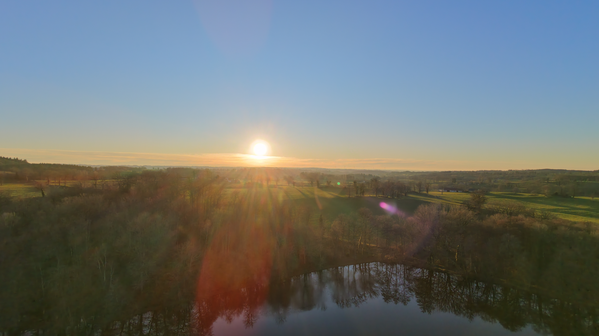

Avant Zermatt, avant Annecy, avant les volcans, il y a eu ça : les champs derrière la maison, l'étang en contrebas, et un drone tout neuf avec un pilote qui tremblait un peu. Chaque voyage de ce blog a commencé ici, un 27 décembre, à onze heures du matin.
Six secondes de vol le matin. C'est tout ce que j'ai osé ce jour-là. Et franchement, c'est très bien comme ça. On croit toujours qu'il faut partir loin pour trouver des images. Puis on décolle au-dessus de son propre jardin et on découvre que les haies dessinent des motifs, que l'étang est un miroir, que la campagne d'hiver a une géométrie que l'été cache sous les feuilles.
c'est mon terrain d'entraînement : tout ce que je tente ailleurs, je l'ai raté ici d'abord.Je suis revenu en fin d'après-midi, à 16h25, pour l'heure dorée, qui en décembre ne dure pas une heure mais vingt minutes, alors on ne traîne pas. Le soleil rase les prés, les arbres nus étirent des ombres de vingt mètres, et l'étang prend la couleur du ciel.
Et à 16h37, le point final de la journée : le soleil qui touche l'horizon au bout des champs, les rayons qui traversent les arbres jusqu'à l'étang, les reflets des troncs dans l'eau immobile. Aucune montagne célèbre, aucun lac touristique, juste chez moi, au bon moment.

16:37, le soleil au bout des champsCe carnet est le premier, et c'est volontaire qu'il soit resté longtemps une simple étiquette "chez moi (ça compte ?)" en bas de la page d'accueil. La réponse est oui. Ça compte peut-être même plus que le reste.